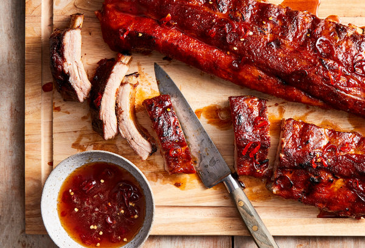

Ribs. You're Gonna Get Chubby!

Lots of people like ribs. Hell, everybody likes ribs
except for people with a bone in the middle of their brain.
But really, EVERYBODY LIKES RIBS!
The thing is, they are super easy. You don't have to overdo it.
Season them, slap them on the Traegar, slather them up, and get
fat and happy!
Ingredients
- Ribs (Baby backs or Saint Louis)
- Rub (Your fave - try Slap Yo Mama if you need something new
- Sauce (Rufus Teague is just delectable)
Steps
- Buy your ribs.
- Set your smoker to 225
- Rub those ribs like they paid you.
- Throw those ribs on the smoker.
- Just let them cook. Four hours. Let it go. If you're
lookin', you're not cookin'. Let them cook.
- Slap some sauce on them, both sides.
- Let them keep cooking. Sauce them every 20 minutes or so.
- They're done when you can bend test them. Bend Test